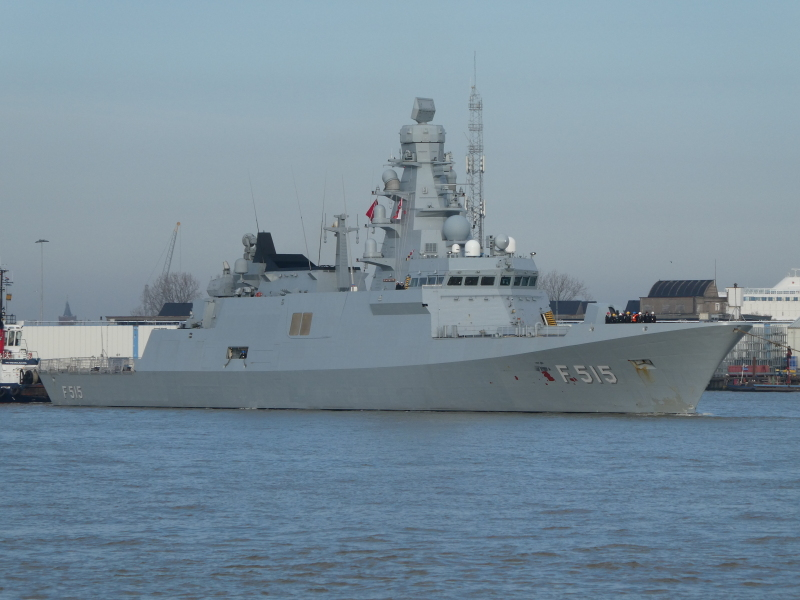

Genel Bilgi
TCG İstanbul (F-515), MİLGEM İ Sınıfı fırkateyn projesinin ilk gemisidir. Platform, Ada sınıfı korvetlerin devamı niteliğinde geliştirilmiş olup daha gelişmiş hava savunma ve güdümlü mermi kullanma kabiliyetiyle öne çıkmaktadır.
Gemi; denizaltı harbi, suüstü harbi, hava savunma, ileri karakol faaliyetleri, keşif, gözetleme, hedef tespit, teşhis, tanıma ve erken ihbar görevlerini icra etmek üzere tasarlanmıştır.
TCG İstanbul, yüksek yerlilik oranı, milli savaş yönetim sistemi, milli sensörler ve silah sistemleriyle Türk Donanması için önemli bir eşik niteliğindedir.



Teknik Özellikler
| Gemi Sınıfı | İ Sınıfı Fırkateyn |
| Gemi Adı | TCG İstanbul |
| Borda Numarası | F-515 |
| Üretim Programı | MİLGEM 5. gemi / ilk İ Sınıfı fırkateyn |
| Üretici / Ana Yüklenici | STM ana yükleniciliğinde, İstanbul Tersanesi Komutanlığı’nda inşa |
| Görev Tanımı | Denizaltı harbi, suüstü harbi, hava savunma, ileri karakol, keşif, gözetleme, hedef tespit, teşhis, tanıma, erken ihbar |
| Platform Tipi | Çok rollü milli fırkateyn |
| Tasarım Önemi | Türk mühendisleri tarafından tasarlanan ilk Türk fırkateyni |
| Boy | 113 m |
| Genişlik | 14,4 m |
| Gövde Gelişimi | Ada sınıfına göre silah ve sistem ilaveleri nedeniyle yaklaşık 10 metre uzatılmış yapı |
| Hava Savunma Yeteneği | Güdümlü hava savunma mühimmatı bulundurma ve fırlatma kabiliyeti |
| Dikey Atım Sistemi | MİDLAS Dikey Atım Lançer Sistemi |
| Gemi Savar Füze | ATMACA Seyir Füzesi |
| Yakın Hava Savunma Sistemi | GÖKDENİZ CIWS |
| Ana Radar | CENK-S AESA Radarı |
| Savaş Yönetim Sistemi | ADVENT Savaş Yönetim Sistemi |
| Elektronik Harp Yaklaşımı | Yüksek yerlilik oranına sahip milli elektronik harp altyapısı |
| Muhabere Sistemleri | Geliştirilmiş muhabere sistemleri |
| Seyir Sistemleri | Geliştirilmiş seyir ve platform destek sistemleri |
| Yerlik Oranı | %80 |
| Alt Yüklenici Sayısı | 150’den fazla sistem için yaklaşık 80 alt yüklenici |
| Toplam Katkı Veren Firma | 220 farklı firma |
| Sözleşme Tarihi | 12 Nisan 2019 |
| Denize İndirme | 23 Ocak 2021 |
| İlk Seyir Tecrübesi | 20 Haziran 2023 |
| Teslim Tarihi | 19 Ocak 2024 |
| Proje Önemi | Türkiye’nin ilk milli fırkateyni |
| Öne Çıkan Özellik | Milli sensör, silah ve savaş yönetim sistemlerini yüksek yerlilik oranıyla birleştiren çok rollü modern fırkateyn |